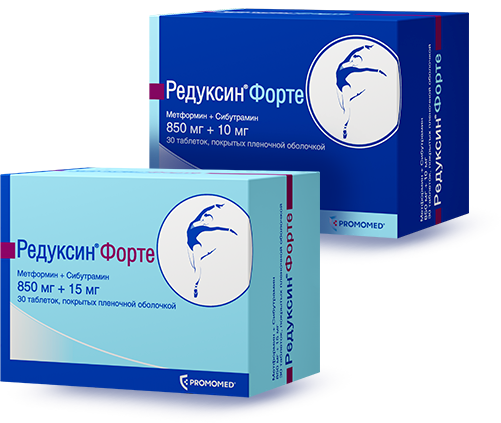
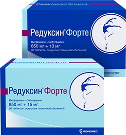

Редуксин® Форте
Эволюция возможностей в терапии ожирения
Повышение эффективности снижения веса
Управление метаболическим здоровьем
Улучшение прогноза и качества жизни

Редуксин® Форте — новая оригинальная фиксированная комбинация
для комплексного решения проблем лишнего веса и улучшения обмена веществ
для комплексного решения проблем лишнего веса и улучшения обмена веществ
Редуксин®
Снижение чувства голода
и контроль аппетита
и контроль аппетита
Эффективное снижение
и удержание веса
и удержание веса
Благоприятный профиль
безопасности
безопасности

Метформин
Улучшение обмена веществ
Ускорение расщепления жиров
и углеводов
и углеводов
Обладает anti-age
и онкопротективным эффектом
и онкопротективным эффектом
Редуксин® Форте — "усиленный Редуксин" для комплексного решения проблем
лишнего веса и улучшения обмена веществ
лишнего веса и улучшения обмена веществ
Значительно снижается масса тела уже
через 3 месяца терапии у 92,5% пациентов
через 3 месяца терапии у 92,5% пациентов
Повышается эффективность снижения веса
более чем на 10% по сравнению с редуксином
более чем на 10% по сравнению с редуксином
Нормализуются показатели обмена веществ более чем у 80% пациентов
Ускоряется расщепление жиров
и углеводов
и углеводов
Вырабатываются правильные привычки питания
и контроль аппетита почти у 80% пациентов
и контроль аппетита почти у 80% пациентов
Снижается общая калорийность рациона питания почти на 40%
Редуксин® Форте — эволюция возможностей в терапии ожирения
Следует назначать препарат при следующих состояниях: аритмии в анамнезе, хронической недостаточности кровообращения, заболеваниях коронарных артерий (в т.ч. в анамнезе), кроме ишемической болезни сердца (ИМ, стенокардии); глаукоме, кроме закрытоугольной глаукомы, холелитиазе, артериальной гипертензии (контролируемой и в анамнезе), неврологических нарушениях, включая задержку умственного развития и судороги (в т.ч. в анамнезе), эпилепсии, нарушении функции печени и/или почек легкой и средней степени тяжести, моторных и вербальных тиках в анамнезе, склонности к кровотечению, нарушению свертываемости крови, приеме препаратов, влияющих на гемостаз или функцию тромбоцитов.